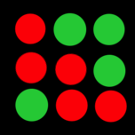

Tap A Dot
If you like it - rate it

Read App Picker's review here
How To Play:
Survial Mode:
Tap the buttons as they turn green and before they disappear. The dots increase in frequency as the game progresses. The game ends when you fail to press the dot in time.
Blackout Mode:
Clear all the dots on the screen as quickly as possible to record the lowest time.
iPhone Support:
Optimized for the iPhone 5(s)
The 7.1 update is needed
For any problems that happen during the game, simply exiting out to the home screen and reopening will fix it
Android Support:
Available for both phones and tablets